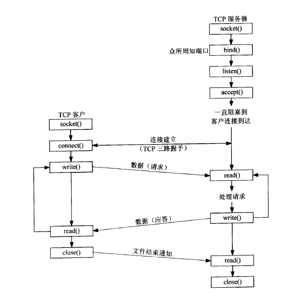
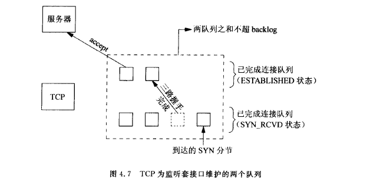
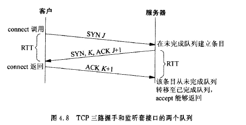

socket¶
1. socket地址结构¶
-
sockaddr_in
ipv4协议的地址结构是sockaddr_in，ipv6的地址结构是sockaddr_in6。struct sockaddr_in { sa_family_t sin_family; in_port_t sin_port; /* Port number. */ struct in_addr sin_addr; /* Internet address. */ /* Pad to size of `struct sockaddr'. */ unsigned char sin_zero[sizeof (struct sockaddr) - __SOCKADDR_COMMON_SIZE - sizeof (in_port_t) - sizeof (struct in_addr)]; };sin_family：表示地址簇，ipv4: AF_INET, ipv6: AF_INET6，sin_port：16位的端口号sin_addr：点分十进制。- 通用地址结构
结构体是sockaddr，方便可以接受ipv4/ipv6的地址结构。之所以采用sockaddr，而不采用void*是因此socket编程早于ANSI C。将struct sockaddr { sa_family_t sa_family; char ss_data[14]; };sockaddr_in/sockaddr_in6强制转换为sockaddr，通过sockaddr的sa_family来分别使用的是ipv4/ipv6。 - 网络字节序列和主机字节序列转换
TCP/IP协议规定，网络传输字节按照**大端字节序列**方式
大端：低地址存储在高位。小端：低地址存低位。 sin_port转换#include <arpa/inet.h> uint32_t htonl(uint32_t hostlong); // host to net long(32位置) uint16_t htons(uint16_t hostshort); // host to net short(16位置) uint32_t ntohl(uint32_t netlong); // net to host long uint16_t ntohs(uint16_t netshort);sin_addr转换
与协议无关的的转换函数，即ipv4/ipv6都可以。ipv4专用的转换函数#include <arpa/inet.h> int inet_pton(int af, const char *src, void *dst); const char * inet_ntop(int af, const void *src, char *dst, socklen_t size);#include <arpa/inet.h> int inet_aton(const char *cp, struct in_addr *inp); char *inet_ntoa(struct in_addr in); in_addr_t inet_addr(const char *cp); // 有风险，不建议使用
2. socket函数¶
客户端的tcp和服务端tcp通信与socket函数关系，如图所示。
 +socket失败时返回-1，成功是返回一个非零整数值，表示套接字描述符，sockfd。 + 参数 +#include <sys/types.h> #include <sys/socket.h> int socket(int family, int type, int protocol);family：AF_INET,AF_INET6,AF_LOCAL+type：SOCK_STREAM、SOCK_DGRAM，还可和SOCK_NOBLOCK和SOCK_CLOEXEC进行组合使用。 +protocol：0，表示选择family和type组合系统默认值。 + 状态：
创建sockfd以后，处于CLOSED状态。 +connect客户端调用函数。#include <sys/types.h> #include <sys/socket.h> int connect(int sockfd, const struct sockaddr *addr, socklen_t addrlen);
+ 返回值：成功返回0，失败返回-1。 客户端调用connect函数，会激发TCP的三次握手过程，而且仅仅在连接成功或者失败才返回。客户端是在第二个分节返回，服务端是第三个分节返回。
+ETIMEOUT：若客户端没有收到SYN分节响应，就会返回这个错误。 +ECONNREFUSED：若对客户端的SYN分节响应的是RST，表示服务器主机在指定的端口上没有进程与之连接，客户端一接受到RST就返回ECONNREFUSED错误。 + 不可达错误。 + 参数 +sockfd：是socket函数返回值。 +sockaddr：是套接字的地址结构，sockaddr_int/sockaddr_in6强制转换而来。 +addrlen：传入的地址结构大小。
+ 状态：
connect会使得当前套接字从closed状态转移到SYN_SENT状态，如成功再转移到ESTABLISHED状态，若失败则该套接字不可用，必须关闭。 +blind服务器端调用函数。#include <sys/types.h> #include <sys/socket.h> int bind(int sockfd, const struct sockaddr *addr, socklen_t addrlen);
addr的地址一般选择通配地址ADDR_ANY，端口选择一个大于1024的端口。ip地址和端口哪个是0，哪个就由内核决定。 +listen#include <sys/types.h> #include <sys/socket.h> int listen(int sockfd, int backlog);listen函数由服务器端调用。 + 作用完成两件事： +socket函数创建的套接字是一个主动套接字，即是一个将会主动调用connect函数发起连接的客户端套接字。listen把一个未连接的套接字转换程一个被动套接字，告诉内核接受指向这个被动套接字的连接请求。此时的状态是:LISTEN+ 参数backlog规定了内核为相应套接字排队的最大连接个数。 +backlog
内核为每个**监听**套接字维护两个队列：
(1) 未完成连接队列：处于SYN_RCVD状态的客户端套接字。
(2) 已完成连接队列：每个已经完成TCP三次握手过程的客户端套接字。这些套接字处于ESTABLISHED状态。
backlog = 两个队列数之后。 
+ 状态转移
如图，当来自客户的SYN分节到达时，TCP在未连接队列创建一个新项，然后响应以三次握手的第二个分节，这一项一直保留在未完成连接队列中，直到三次握手的第三个分节到达或者超时。如果到达，该项就从未完成连接队列中移到已完成连接队列的队尾。当调用accept时，已完成连接队列的队首将作为accept的返回值，如果已完成连接队列是空，那么调用accept函数的进程会进入睡眠状态。 
+accept调用#include <sys/types.h> /* See NOTES */ #include <sys/socket.h> int accept(int sockfd, struct sockaddr *addr, socklen_t *addrlen);accept时，已完成连接队列的队首将作为accept的返回值，如果已完成连接队列是空，那么调用进程进入睡眠状态。成功返回客户端的已连接套接字connfd，失败返回-1。accpet函数返回时，表示已连接套接字connfd和服务器端的监听套接字listenfd完成了三次握手。-
EMFILE
如果函数accept返回EMFILE，即文件描述符过多，怎么处理？先实现准备一个空闲的文件描述符
/dev/null。遇到这种情况，先关闭这个空闲的文件描述符，就可以获得一个文件描述名额，然后再accept就可以拿到这个连接的socket文件描述符，随后立即close，就优雅的断开了与客户端的连接，最后重新打开空闲文件，以备这种情况再次出现。 +close这个函数表示的把该套接字标记为已关闭，然后立即返回到调用进程，该套接字描述符不能再被调用进程使用。#include <unistd.h> int close(int fd);
+ 注意事项 + 由于描述符是引用计数，close只是减少该引用计数，只有当该引用计数为0时才会引用终止序列 + tcp会先将已经排队等待发送到对端的任何数据发送过去，然后再发送终止序列FIN。因此，调用close不是立即发送终止序列。 +shutdown+#include <sys/socket.h> int shutdown(int sockfd, int how);shutdown解决的是close的两个限制： +close把描述符计数减一，仅仅在计数变为0时才关闭套接字。shutdown可以不管描述符计数就激发TCP的正常连接终止序列。 +close终止读和写两个方向的数据传递，shutdown是半关闭，可以只是关闭一个方向数据流。 + 参数 +how: +SHUT_RD：关闭读 +SHUT_WR：关闭写 +SHUT_RDWR：关闭读写